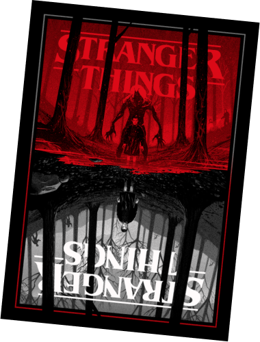
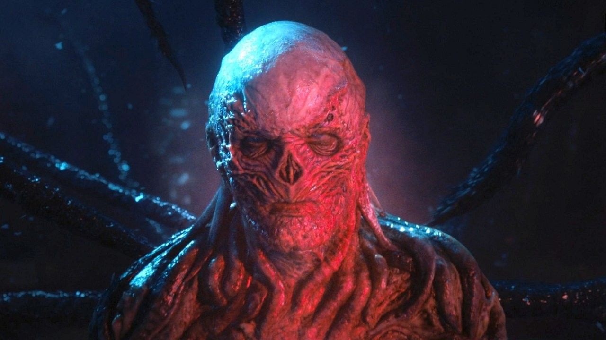
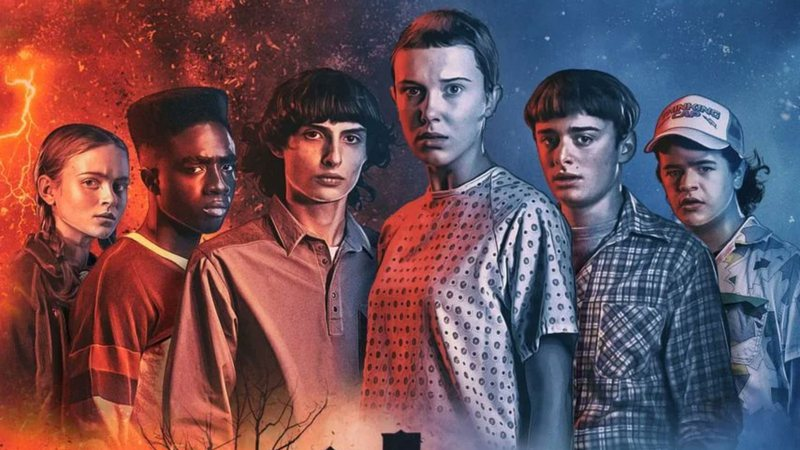
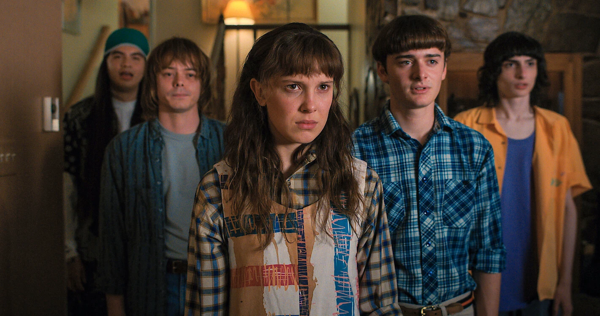

01 / ALÉM DO QUE VOCÊ CONHECE
O mundo
invertido.
Uma cópia sombria do nosso mundo, habitada por criaturas horrendas, tempestades assustadoras e entidades malignas. Um reino controlado por Vecna, que planeja trazer tudo isso para o nosso lado.
Em Hawkins, nada é tão simples quanto parece. Às vezes, a única saída é enfrentar o desconhecido.

02 / O PERIGO ESTÁ MAIS PERTO
Stranger Things
Vol. 4
Mais experientes, os heróis precisam enfrentar desafios maiores e tomar decisões que mudarão suas vidas. Assista ao trailer e entre no clima desta aventura.
03 / UMA HISTÓRIA. MUITOS MISTÉRIOS.
Hawkins nunca
mais foi a mesma.

01 / Uma nova ameaça 
02 / Amigos até o fim 
03 / Além dos limites
04 / A PRÓXIMA AVENTURA É SUA
Entre para
o clube de
Dungeons
& Dragons.
Gosta de desafios e não tem medo de rodar o D20? Crie um personagem para a próxima campanha e descubra uma experiência de outro mundo.
Seu personagem começa aqui.
Demonstração: use dados fictícios. Os campos serão validados nesta página, sem cadastro ou envio.